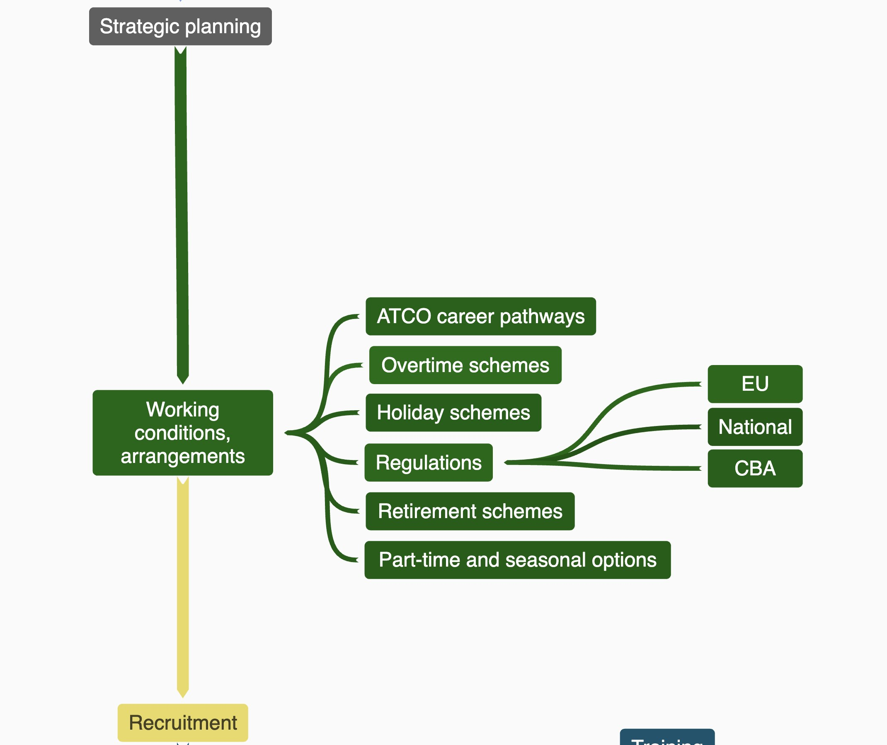

Sustaining and adapting the workforce
Retention, retirement, working time and flexible arrangements influence both workforce availability and resilience. Local legal and employment frameworks shape the options available.
Working conditions and arrangements

Our next logical step is to determine the working conditions and overall arrangements for ATCOs, which, ultimately, define how much flexibility and resilience the system can deliver in practice. Workforce demographics, career pathways, and working arrangements all directly influence an ANSP's capacity to respond to changing operational demands. In many environments, long training lead times, retirements, and evolving work expectations mean that workforce availability becomes a strategic constraint rather than a purely operational issue.
EU regulations (such as Implementing Regulations (EU) 2017/373 and 2015/340, and various EU Directives) set out broad parameters for defining the working conditions of ATCOs and operational staff at ANSPs. These regulations ensure fair and equal treatment of the workforce across Europe and that safety requirements are duly considered and met. However, these regulations do not impose specific schemes or practical constraints on the management of ANSPs, as they are generic by design and leave ample room for interpretation by local authorities and policymakers.
All states have labour laws that align with European directives and define the general local rules of employment. Typically, these do not specify requirements or rules for aviation, or for air traffic management in particular, but remain at a more generic level. In some cases, national labour laws may specify rules on screen time, maximum shift lengths, mandatory rest periods, overtime conditions, etc.
While collective bargaining agreements (CBAs) between the employer and the labour unions are not regulations legally speaking, from a management perspective, they still introduce legal constraints into the decision-making, notwithstanding their importance in ensuring a level playing field and a fair treatment for employees. Even though most CBAs are not publicly available, it is still known, that there are huge differences between the topics included, the level of detail, the period of validity, and even the number of CBAs from ANSP to ANSP. The collective bargaining process and the accepted negotiation tactics are both culturally determined, and thus also vary greatly across Europe.
In addition to labour laws, governments may issue industry-specific legislation that includes high-level provisions on the working conditions of ATCOs (examples include Austria, Bulgaria, Poland, Romania, and Hungary, to name a few). In Belgium, France, and Spain, there are very detailed and specific local legislative acts governing the working conditions of ATCOs, even defining key parameters of the rostering schemes, and introducing various other constraints. Civil Aviation Authorities or National Supervisory Authorities may also issue local requirements or guidelines for ANSPs concerning ATCO working conditions, though this appears to be a less common practice.
Overtime
A key enabler of flexibility and handling seasonal fluctuations and short-term increases in traffic demand is ATCO overtime. Overtime schemes may be defined in local regulations or bargaining agreements, or by the management of ANSPs. Most ANSPs in Europe utilise some form of overtime scheme to manage peak periods and maintain a buffer.
The flexibility offered by overtime comes at a cost. Working overtime significantly contributes to chronic fatigue and also consumes ATCO resources, as the typical overtime scheme in Europe includes some form of compensation, such as reduced working hours or additional days off. ANSPs may have schemes in which the total number of shifts or working hours is defined annually (as is the case, for instance, in Germany and Hungary). If ANSPs need to resort to overtime in the early part of the year, it may mean they lack sufficient resources later, even during off-peak periods.
Finally, there is also a delicate balance to strike regarding the costs associated with overtime. Employers are typically required to pay extra fees for overtime hours, in addition to normal compensation. The fact that this additional compensation is payable only if overtime hours are worked also introduces flexibility in ANSPs' staff costs. However, relying too heavily on overtime, especially if the uncertainty of the traffic forecast is relatively high, may result in higher costs than increasing staffing levels.
Holidays
National holiday regulations inevitably affect operations; however, ANSPs may have some flexibility in designing ATCO holiday schemes. There is an inherent contradiction in that peak traffic periods coincide with typical summer holiday periods, pressuring ANSPs and ATCOs towards schemes that incentivise taking leave during off-peak periods. However, ATCOs' chronic fatigue needs to be considered and addressed during peak periods as well, which complicates matters further.
National rules can share decisions on annual leave between employers and employees. Dialogue between ANSPs and controllers helps align leave arrangements with operational requirements and workforce planning.
Retirements
Every Member State has a national pension and retirement scheme, as defined in its general national legislation. In addition, most states also define specific rules and schemes for hazardous or otherwise demanding special occupations. Most European states have specific rules governing the early retirement of ATCOs and their associated pension schemes, in some cases, enabling ATCOs to retire as early as age 55, and generally around 5 years prior to the normal retirement age. Some states also define options for retired controllers to be called upon by the ANSPs, under certain conditions, to continue OPS duties for an additional period (for example, in Belgium).
Similar to the holiday schemes, regulations leave some room for manoeuvring for ATCOs to decide when they retire, which translates into planning uncertainty for ANSPs. This uncertainty is once again best resolved through a continuous and constructive dialogue between the management and the operational staff.
Part-time and seasonal options
With greater focus on work-life balance, new trends in the labour market, and the changing priorities of the new generation of employees, there is a growing need for more flexible options and working arrangements. In general, more people are looking for part-time work opportunities, including seasonal options.
Given the extensive training investments and the requirements for obtaining and maintaining ATCO licenses, these options are traditionally out of reach for ANSPs and ATCOs. However, upon closer examination, we may find that the decision to consider these options is based on associated costs rather than regulatory constraints. The general understanding is that the training required to train an ATCO is independent of their future working arrangements, i.e., it is the same whether the ATCO works part-time. In economic terms, this diminishes the returns on the training investments. However, when an ANSP has difficulty finding suitable applicants to fill the missing ATCO positions, opening part-time options may be effective in significantly increasing the pool of potential applicants.
Seasonal working schemes may be more difficult to implement in the operational context under the current framework. Still, there may be ways to consider such options in the future.
ATCO career pathways
From a purely synthetic management perspective, the ideal situation would be for ATCOs to work in OPS (and other duties) from the time they acquire their licenses until they retire, preferably at age 65. However, that is hardly the case in reality, nor is it the ideal career pathway for many people. Factors such as medical attrition, early retirements, perishing capabilities, changes in personal circumstances, etc., affect ATCOs' careers. In addition to these unexpected changes, applicants and even incumbent ATCOs may wish to follow alternative pathways, exploring different assignments and positions, even outside operations. Even ANSPs may want to offer alternative career pathways to retain applicants who fail to complete training, or employees with several years of operational experience who are unable or unwilling to continue operational work.
Designing alternative career pathways for ATCOs and ATCO students and making them transparent from the start of the process may help make the profession more appealing while also reducing uncertainty on both sides.
Workforce availability and retention
Working Conditions encompass the employment conditions and workforce management practices that influence the attractiveness of the ATCO profession and the retention of qualified controllers throughout their careers. These factors include remuneration, career development opportunities, retirement arrangements, flexibility of working arrangements and other aspects affecting the willingness of controllers to remain within the profession over the long term.
Working Conditions received Medium Incidence and Medium Severity classifications. Stakeholders recognised retention and employment arrangements as important to workforce sustainability.
The consultation process revealed broad agreement among ANSPs regarding the importance of retaining experienced controllers and providing attractive employment conditions capable of supporting long-term workforce stability. Stakeholders also agreed that workforce planning becomes considerably more complex when retirement behaviour or workforce departures cannot be predicted with confidence.
However, significant differences emerged across ANSPs in relation to remuneration frameworks, retirement arrangements and workforce flexibility. These differences largely reflect national labour legislation, collective agreements and local labour-market conditions. Consequently, while the underlying challenges are often similar across ANSPs, the extent to which they affect workforce availability varies considerably from one operational environment to another.
The challenges identified within Working Conditions primarily concern the retention of qualified controllers and the predictability of workforce departures. Unlike recruitment or training-related challenges, many of the issues reported by stakeholders are influenced by individual career decisions, labour-market dynamics or employment frameworks that extend beyond the direct control of workforce planners. As a result, they introduce additional uncertainty into the management of future workforce availability.
Challenges reported in Working Conditions (Source: Consortium assessment)
| ID | Challenge | Rationale | ANSPs reporting |
|---|---|---|---|
| H-WC.1 | Uncertain retirement behaviour | In environments where controllers are not subject to a fixed retirement age, workforce departures depend largely on individual decisions. This reduces planning certainty and complicates the forecasting of future replacement requirements, especially if the notice time requirements are also short. | 5 (29%) |
| H-WC.2 | Compensation disparities between workforce cohorts | Differences in remuneration between newer and more experienced controllers performing similar roles may create perceptions of inequity, affecting workforce morale, engagement and retention. | 5 (29%) |
| H-WC.3 | Loss of controllers to more attractive labour markets | Qualified controllers may leave for employers, regions or sectors offering more attractive compensation packages or career opportunities, reducing the retention of experienced operational staff. | 3 (18%) |
| H-WC.4 | Early retirements associated with major operational changes | The introduction of major operational systems or technologies may encourage some experienced controllers to retire earlier than anticipated rather than adapt to new operating environments, affecting workforce planning assumptions. | 2 (12%) |
| H-WC.5 | Cost-of-living pressures affecting workforce retention | In locations with particularly high living costs, newly qualified controllers may experience difficulties remaining close to their assigned unit, increasing the likelihood of early workforce departures. | 1 (6%) |
| H-WC.6 | Limited career development and workforce flexibility | A lack of visible career progression opportunities and flexible working arrangements may reduce long-term workforce engagement and negatively affect retention. | 1 (6%) |
The challenges identified in this key area are primarily associated with retaining experienced controllers rather than attracting new entrants into the profession. Unlike recruitment and training activities, workforce departures are often influenced by personal decisions and external labour-market conditions, making them inherently more difficult to predict and manage.
The most frequently reported concerns relate to workforce retention and retirement planning. Several ANSPs highlighted the difficulty of forecasting retirement behaviour when controllers can choose their departure timing without constraints, while others emphasised the potential impact of compensation disparities on workforce morale and retention. Stakeholders also pointed to increasing competition for qualified personnel across labour markets and the risk of losing experienced controllers to more attractive opportunities.
Although less frequently reported, challenges associated with career development, workforce flexibility and local living conditions illustrate the diverse range of factors capable of influencing retention. Taken together, these findings suggest that maintaining an attractive and sustainable employment environment is an important complement to recruitment and training efforts, particularly given the time and investment required to produce new ATCOs.
The solutions identified within Working Conditions primarily focus on improving workforce retention and increasing the predictability of workforce departures. Rather than increasing the number of new entrants into the profession, most measures seek to preserve existing operational expertise and reduce avoidable losses from the qualified workforce.
Main solutions for Working Conditions (Source: Consortium assessment)
| ID | Solution | Challenges addressed | Time horizon | Control over the solution | Model variables affected |
|---|---|---|---|---|---|
| H-WC.BP.1 | Implement workforce retention measures | H-WC.3 | Short | Internal | Attrition |
| H-WC.BP.2 | Introduce flexible and phased retirement arrangements | H-WC.1 H-WC.4 H-WC.6 | Short | Internal | Retirements |
| H-WC.BP.3 | Address structural drivers of workforce attrition | H-WC.2 H-WC.3 H-WC.5 H-WC.6 | Long | Internal + External | Attrition |
| H-WC.BP.4 | Establish structured career development pathways | H-WC.3 H-WC.6 | Medium | Internal | Attrition |
| H-WC.BP.5 | Increase workforce flexibility and work-life balance options | H-WC.6 | Short | Internal | Attrition |
| H-WC.BP.6 | Introduce advance notification requirements for early retirement | H-WC.1 H-WC.4 | Short | Internal + External | Retirements |
| H-WC.FP.1 | Promote mobility and career development across the European ATM network | H-WC.3 H-WC.5 H-WC.6 | Long | Internal + External | Attrition |
| H-WC.FP.2 | Enhance the attractiveness of the profession through future operational concepts and technologies | H-WC.3 H-WC.6 | Medium | Internal + Technology | Intake Attrition |
The solutions recognise that replacing experienced controllers is considerably more difficult and time-consuming than retaining them. Accordingly, most identified measures influence the Attrition variable, while a smaller number focus on improving the predictability and management of Retirements.
Several best practices seek to address the underlying causes of workforce departures. Measures related to remuneration, working conditions, career development and workforce flexibility respond directly to the retention challenges identified during the consultation process and aim to increase the attractiveness of the profession over the course of a controller’s career. Stakeholders consistently emphasised that retention depends not only on compensation levels, but also on providing meaningful career opportunities and working arrangements capable of adapting to changing workforce expectations.
A second group of measures focuses on improving the predictability of workforce exits. Flexible retirement arrangements and advance notification requirements seek to provide ANSPs with greater visibility regarding future departures and therefore improve workforce planning and replacement activities. These measures are particularly relevant in environments where retirement decisions are largely voluntary and difficult to forecast.
The future practices build on similar principles but extend them beyond the organisational level. Greater mobility across the European ATM network and clearer long-term career pathways seek to retain expertise within the profession as a whole, while positioning the ATCO role within the context of future operational concepts, automation and digitalisation aims to increase its long-term attractiveness for both current and future generations of controllers.